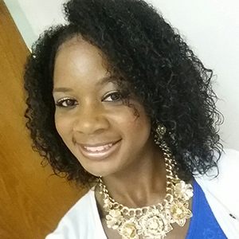
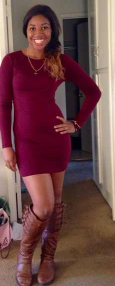
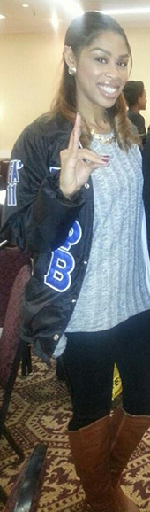
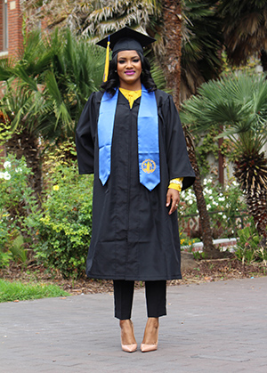
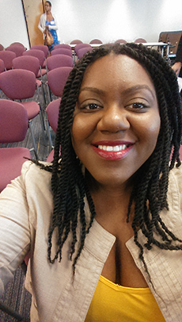
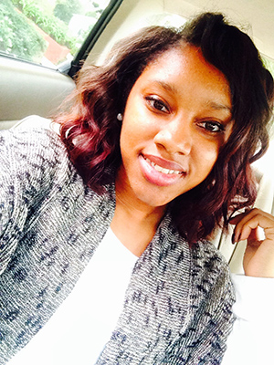
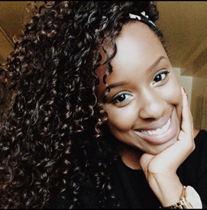
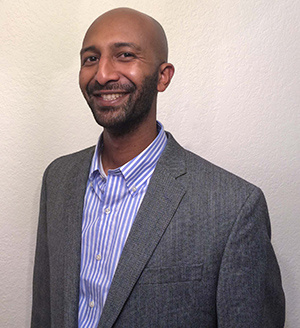

Shannon PennBS in Communications "I will begin my career. I will become a Motivational Speaker." |

Danita WilliamsBS in Business Management "I plan to take some time to travel and also continue my marketing career." |

Deja ThomasBA in Child and Adolescent Development/ Psychology & Sociology "I will be pursuing a PhD in Educational Policy and Leadership Studies at the University of Iowa or a Master's of Arts in Sociology and Education at the Teacher's College at Columbia University." |

Jamilia JerniganBS in Nutritional Sciences, Emphasis in Nutrition Education "Possibly pursuing a Master's Degree in Health Administration or Public Health. Not sure where" |

Teana BoxBA in Sociology "I will be working for the City and County of SF and hoping to be accepted into a Master's program in the fall." |

Marcel GloverBA in Political Science "I will be working somewhere, but have not exactly figured it out yet. Hopefully, I'll find an entry level position at a non-profit." |

Ashlei McPhersonBA in Political Science "I will be attending University of Iowa beginning fall 2015." |

Brittany GinwrightBA in Philosophy "After graduation I am planning to continue working with the YMCA. I am currently an Assistant Director for an after school program in Santa Clara. I am aiming to become a Site Director of an after school program in my near future. I would love to grow with this company, and travel all over the world before diving into a career." |

Mary JohnsonBA in Child and Adolescent Development/ Minor Special Education "I will be attending graduate school in the Fall of 2015. I will be studying Educational Policy." |

Christopher AtkinsBS in Marketing "Following graduation I will being my career as a business to business marketer. I plan to gain experience and knowledge for one year then return back to school to pursue an MBA. Once I have obtained a masters I plan to fulfill my life long dream of starting my own business." |

Eshetie LikuBS in Electrical Engineering "My post BSEE plans are in order:
|
Black Spartan Legacy: